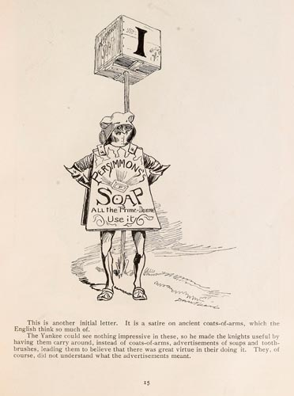

|  |
This is another initial letter. It is a satire on ancient coats-of-arms, which the English think so much of. The Yankee could see nothing impressive in these, so he made the knights useful by having them carry around, instead of coats-of-arms, advertisements of soaps and tooth-brushes, leading them to believe that there was great virtue in their doing it. They, of course, did not understand what the advertisement meant. |